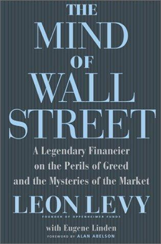

莱昂·利维（Leon Levy）1925年生于纽约曼哈顿，在纽约市立学院（City College of New York）主修心理学，1948年毕业后以研究分析员身份进入华尔街。1950年他加入Oppenheimer & Co.，1956年成为合伙人，1959年创立该公司第一支共同基金；这批基金后来发展成管理逾六十支产品、总资产超过1200亿美元的集团。1982年，利维将Oppenheimer相关业务以1.62亿美元卖给英国Mercantile House，同年与杰克·纳什（Jack Nash）共同创立对冲基金Odyssey Partners，此后十五年年均回报率达22%，同期市场平均回报为16.9%，管理规模从5000万美元增长到近30亿美元。晚年他向巴德学院（Bard College）捐赠逾1亿美元，并连续十七年资助以色列阿什凯隆（Ashkelon）的考古发掘。2003年4月6日，利维在纽约州威彻斯特县家中因心脏病发作去世，享年77岁。他去世后，遗孀雪莉·怀特（Shelby White）设立利维基金会；2006年，基金会向纽约大学捐赠2亿美元，创建古代世界研究所。
《华尔街的心智》由PublicAffairs出版社于2002年11月出版，利维与《时代》周刊资深撰稿人尤金·林登（Eugene Linden）合著。全书以利维跨越半个世纪的交易经历为线索，考察投资者心理如何反复主导市场：书中回顾了1920年代末"新纪元"式的股市狂热、1950年代大萧条阴影下多个州立法限制养老基金持股的保守氛围，以及1980年代和1990年代末互联网泡沫中相似的贪婪循环。利维借考古现场说明观察偏差：只找陶片的人会漏掉钱币，只找钱币的人也看不见陶片；面对同一市场，经济学家与投资者会因预设不同而筛出完全不同的证据。他不接受心理只是经济基本面的次要噪声，主张市场同时受利润、信贷等数据和群体情绪驱动。利维写道："每一笔交易的一方是天才，另一方是傻瓜，但究竟谁是谁，往往要很久以后才能看清"（There is a genius on one side of every trade and a dolt on the other, but which is which does not become clear until much later）。1983年，他判断能源价格上涨将拉动煤炭运输需求、且铁路公司名下地产被严重低估，买入濒临破产的芝加哥－密尔沃基－圣保罗－太平洋铁路母公司近乎零价的股票，待资产变现后以每股150美元卖出，获利约2亿美元。1999年他公开警告市场将下跌；2000年3月10日纳斯达克见顶5048.62点后暴跌，直到2015年3月才重新回到这一高点，利维本人靠做空科技股获利约1亿美元。
利维请《巴伦周刊》专栏作家艾伦·艾贝尔森（Alan Abelson）为本书作序，艾贝尔森开篇写道，1990年代末的华尔街"seduced otherwise sane human beings into indulging in a once-in-a-generation orgy of speculation"（诱使原本理智的人们，陷入一代人一遇的投机狂欢）。2003年4月，利维在本书出版五个月后因心脏病发作去世，《福布斯》在讣告中称他为"a Wall Street investment genius"（华尔街的投资天才）——这本回忆录也因此成为他留给投资界的最后文字记录。2008年，《机构投资者》把利维列入首届对冲基金经理名人堂，同届入选者还包括乔治·索罗斯、朱利安·罗伯逊与迈克尔·斯坦哈特。
对关注长期投资与市场周期的读者来说，这本书没有提供选股公式，却反复回到一个具体判断：估值标准的松动往往先于价格泡沫的破裂——1920年代的"新纪元"论调与1990年代末的"新经济"叙事，在利维看来是同一种心理机制在不同年代的重演。他自己的操作记录印证了这一判断：1983年靠重新评估铁路资产获利约2亿美元，1999年公开看空市场，2000年纳斯达克见顶后又靠做空科技股赚了约1亿美元——对他而言，识别市场情绪周期与识别资产真实价值，是同一种可以训练的能力。